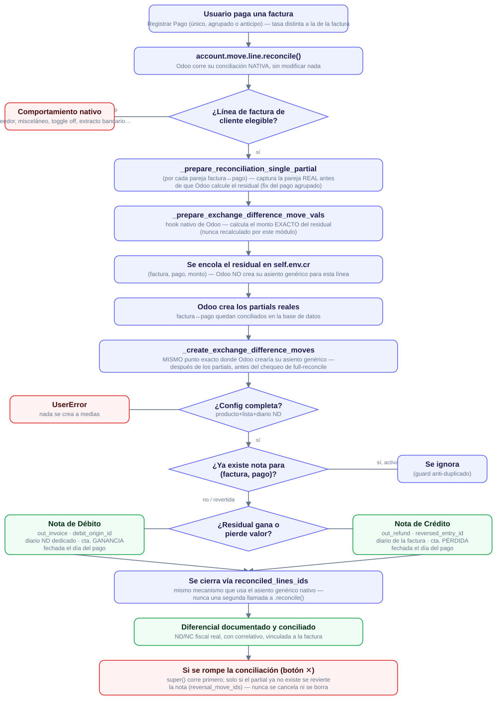

Venezuela - Diferencial Cambiario como Notas de Débito/Crédito
Este módulo documenta el diferencial cambiario que surge al conciliar una
factura de cliente en moneda extranjera contra un pago con una tasa de
cambio distinta, usando Notas de Débito/Crédito fiscales
reales (con correlativo, vinculadas a la factura de origen) en
vez del asiento contable genérico e interno que Odoo crea por defecto.

Cómo funciona
- La conciliación factura↔pago corre exactamente igual que sin el módulo instalado — incluye conciliaciones agrupadas (un pago aplicado a varias facturas). El diferencial se documenta por separado para cada factura involucrada.
- El monto exacto se obtiene interceptando el hook nativo
_prepare_exchange_difference_move_vals que el propio motor de conciliación de Odoo ya calcula — este módulo nunca recalcula el monto por su cuenta.
- Con ese monto, fechado el día del pago, se emite:
- Una Nota de Débito (ganancia cambiaria), vinculada vía
debit_origin_id, en el diario dedicado de ND (is_debit=True con secuencia propia) y en la cuenta de ganancia cambiaria de la compañía.
- Una Nota de Crédito (pérdida cambiaria), vinculada vía
reversed_entry_id, en el diario de la factura de origen y en la cuenta de pérdida cambiaria de la compañía.
Ambas quedan conciliadas de inmediato contra el residual que las originó.
- Si la conciliación que originó la nota se rompe, la nota no se cancela ni se borra — se revierte automáticamente, igual que el asiento genérico nativo de Odoo.
- Aplica solo a documentos de cliente con
move_type igual a out_invoice o out_refund -- incluye Notas de Débito de cliente nativas, ya que Odoo las trata como out_invoice. Cualquier otro caso sigue el comportamiento nativo de Odoo sin modificaciones.
Configuración
- Compañía (Ajustes > Contabilidad): activar el uso de ND/NC para diferencial cambiario, y configurar el producto y la lista de precios de la nota (ambos obligatorios una vez activado el toggle — la compañía no se puede guardar sin ambos).
- Diario de venta:
Es Débito activado, con su secuencia dedicada para Notas de Débito asignada — ambos obligatorios para poder emitir una ND.
Limitaciones
- Solo cubre documentos de cliente con
move_type en out_invoice/out_refund -- incluye Notas de Débito de cliente nativas.
- Requiere producto, lista de precios y (para la rama de ganancia) el diario dedicado de ND correctamente configurados — si falta algo, la conciliación falla con un error claro en vez de dejar una nota incompleta.
- Compatible con IGTF (
l10n_ve_igtf): ajustes independientes sobre la misma conciliación.
- En pagos agrupados con más de una factura candidata, este módulo determina la factura exacta de cada residual capturando la pareja real (factura, pago) antes de que Odoo calcule el residual — nunca adivina por orden de aparición.
- El Widget de Conciliación Bancaria de Odoo Enterprise (
account_accountant) resuelve su propio ajuste de diferencial internamente y no pasa por este módulo — es un flujo legítimo y no está prohibido.
- Una factura liquidada en varias cuotas puede acumular más de una ND/NC, una por cuota, cada una con el monto exacto que el motor de Odoo calculó para esa cuota.
Créditos
Autor/es: Binauraldev
Mantenedor/es: Este módulo es mantenido por Binaural.